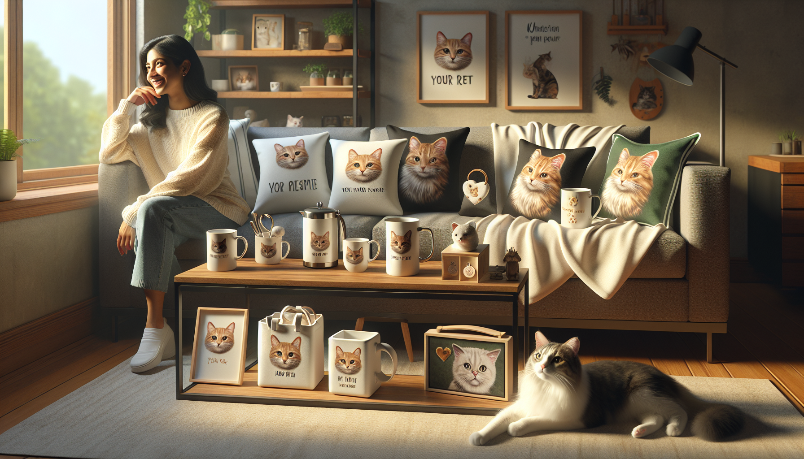

If you have ever shopped for a cat lover, you already know one thing is true: generic gifts rarely create the same excitement as something made just for their favorite furry companion. Personalized cat products continue to stand out because they feel thoughtful, meaningful, and memorable. Whether someone is shopping for themselves, celebrating a new kitten, honoring a senior cat, or looking for a heartfelt holiday gift, custom pet items have a way of turning everyday products into cherished keepsakes.
For pet owners and gift shoppers alike, the best personalized cat products are the ones that combine emotional value with real-life usefulness. It is not enough for something to be cute. It also needs to feel special, fit naturally into a home, and reflect the deep bond people share with their pets. That is exactly why personalized pet gifts remain such strong sellers in the handmade and Etsy space.
In this guide, we are diving into the personalized cat products that actually sell, why they resonate with buyers, and what makes them the kinds of gifts people are excited to order again and again.
Cat owners are passionate about their pets, and they love products that celebrate their cat's personality, name, appearance, or story. Personalized items feel more intimate than off-the-shelf gifts because they are created with one specific pet in mind. That emotional connection matters.
There are a few big reasons custom cat products perform so well:
For shoppers, personalization instantly adds value. A mug is nice, but a mug with a beloved cat's name or portrait becomes a conversation piece. A blanket is cozy, but one customized with a cat image becomes deeply personal. That is the sweet spot where practical and sentimental meet.
One of the most consistently popular categories in personalized pet gifts is drinkware. Custom cat mugs, tumblers, and cups are affordable, giftable, and easy to personalize. They also work year-round, making them a dependable choice for birthdays, holidays, Mother's Day, Father's Day, and just-because gifts.
Why do personalized cat mugs actually sell so well? Because they are useful every day. Buyers love gifts that do not just sit on a shelf. A custom mug featuring a cat's face, name, or funny phrase lets pet owners enjoy a little reminder of their companion with every coffee or tea break.
Popular personalization ideas include:
Drinkware also tends to have broad appeal beyond cat owners themselves. Friends, partners, coworkers, and family members often choose these items because they are easy to order and feel instantly thoughtful.
Home items are another category where personalized cat products really shine. Custom blankets, pillows, wall art, and framed prints connect with buyers because they become part of the home environment. Since cats are such a big part of daily life, people love decor that reflects that bond in a warm and stylish way.
A personalized cat blanket is especially popular because it combines comfort with sentiment. It can feature a pet's name, photo, illustration, or a meaningful phrase. These make wonderful gifts for cat moms, cat dads, and families who see their pet as a true member of the household.
Custom wall art and framed pet prints are also strong sellers because they help pet owners celebrate their cat in a tasteful, display-worthy format. Some customers want playful decor, while others want elegant designs that fit seamlessly into modern interiors.
Products in this category often sell because they:
When a product looks beautiful and tells a personal story, it becomes much more than decor.
One of the most heartfelt categories in personalized cat products is memorial gifts. While this is an emotional purchase, it is also an important one. Many pet owners look for a meaningful way to remember a beloved cat, and customized memorial items offer comfort during a difficult time.
Popular memorial products include engraved ornaments, custom frames, remembrance candles, keepsake boxes, and portrait prints with names and dates. These gifts often become treasured items because they preserve a pet's memory in a tangible way.
Gift shoppers frequently purchase memorial products for friends or family members who are grieving a pet. In those moments, a personalized gift can feel especially supportive because it shows care, empathy, and understanding.
What makes memorial cat gifts actually sell is not flashy design. It is emotional resonance. Buyers want something tasteful, comforting, and sincere. Gentle wording, beautiful craftsmanship, and thoughtful personalization options make all the difference.
Another strong-selling category is wearable and everyday-use products. Think tote bags, shirts, sweatshirts, keychains, phone cases, and accessories featuring custom cat designs. These products are especially popular with younger pet owners and shoppers who want fun, shareable gifts.
A personalized cat tote bag, for example, is practical and stylish. It can be used for errands, work, travel, or carrying pet essentials. Add a custom cat illustration or pet name, and it becomes something unique that reflects the owner's personality.
Items in this category sell well because they are:
Personalized apparel and accessories also work well because they let cat owners celebrate their pets outside the home. For many people, that emotional connection is a huge part of the appeal.
If there is one area where personalized cat products really take off, it is seasonal gifting. Christmas ornaments, holiday stockings, festive mugs, and custom decor featuring a cat's name or likeness are incredibly popular. These products often become annual traditions, which means they do not just sell once. They can inspire repeat purchases year after year.
Holiday shoppers are actively looking for gifts that feel personal without being difficult to choose. A personalized cat ornament or stocking checks all the boxes. It is festive, emotionally meaningful, and easy to gift to a fellow pet lover.
Seasonal products also create urgency. Buyers know they need to order in time for a holiday, making custom items feel even more special. Popular occasions include:
For sellers, this category performs well because it combines strong emotional buying motives with timely demand. For shoppers, it offers a simple way to make celebrations feel more personal.
Not every custom item becomes a bestseller. The personalized cat products that truly sell well usually share a few important qualities. First, they are easy to understand at a glance. Buyers should instantly see what the product is, how it can be personalized, and why it is special.
Second, they balance style and sentiment. A product should feel heartfelt, but it should also look polished enough that someone would be proud to display it, wear it, or give it as a gift. Quality matters. Clean design, thoughtful materials, and clear personalization options all help drive confidence.
Third, the best products tap into real customer emotions. People are not just buying an object. They are buying a way to celebrate love, companionship, humor, memory, or identity. That emotional layer is what turns a simple item into something worth purchasing.
Here are some of the top features buyers look for:
When all of these come together, personalized cat products become much more likely to stand out and convert into sales.
At the end of the day, personalized cat products that actually sell are the ones that make people feel something. They celebrate the joy pets bring into everyday life, help gift shoppers give something meaningful, and offer cat owners a special way to keep their companions close in daily routines and home spaces.
From custom mugs and cozy blankets to memorial keepsakes, holiday ornaments, and stylish tote bags, the most successful personalized cat gifts are the ones that blend emotion with usefulness. They are not just trendy. They are lasting, relatable, and deeply appreciated.
If you are shopping for a cat lover or looking for a unique gift that feels thoughtful and one-of-a-kind, personalized pet products are always a wonderful choice.
Shop personalized pet products at SnoutAndAbout on Etsy.